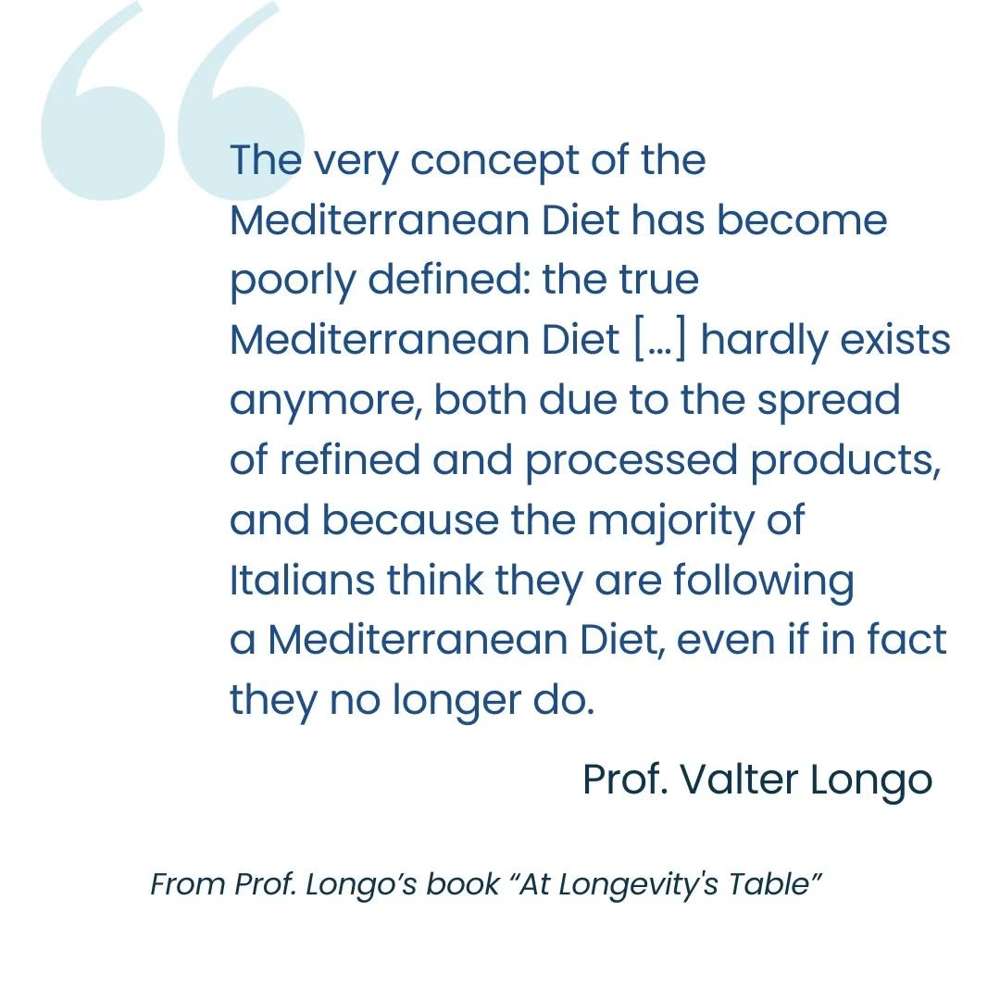

AI summary & key facts
Louis shares a quote from Valter Longo's 'At Longevity's Table' saying the true Mediterranean diet (extra virgin olive oil, legumes, vegetables, fruit, whole grains, less fish, cheese, eggs and moderate red wine) has largely been replaced by refined and processed foods. Louis adds that what people eat in the Mediterranean today is no longer a traditional Mediterranean diet.
- True Mediterranean diet defined by olive oil, legumes, vegetables, whole grains and moderate wine
- Refined and processed products have displaced it
- Many Italians believe they follow it when they do not
The diet that people actually eat nowadays in the Mediterranean… is no longer a traditional Mediterranean diet. It is full of processed junk, just like the standard American diet
"The very concept of the Mediterranean Diet has become poorly defined: the true mediterranean Diet (abundance of extra virgin olive oil, legumes, vegetables, and seasonal fruit, whole grains and flours and, less frequently, fish, cheeses and eggs, alongside a moderate consumption of red wine) hardly exists anymore, both due to the spread of refined and processed products and because the majority of Italians think they are following a Mediterranean Diet, even if in fact they no longer do." (Prof. Valter Longo "At Longevity's Table")
ℹ️ For information and nutritional assistance, contact the Create Cures Foundation at: clinic@createcures.org
#profvalterlongo #fondazionevalterlongo #createcuresfoundation #atlongevitystable #mediterraneandiet #fastingmimickingdiet
